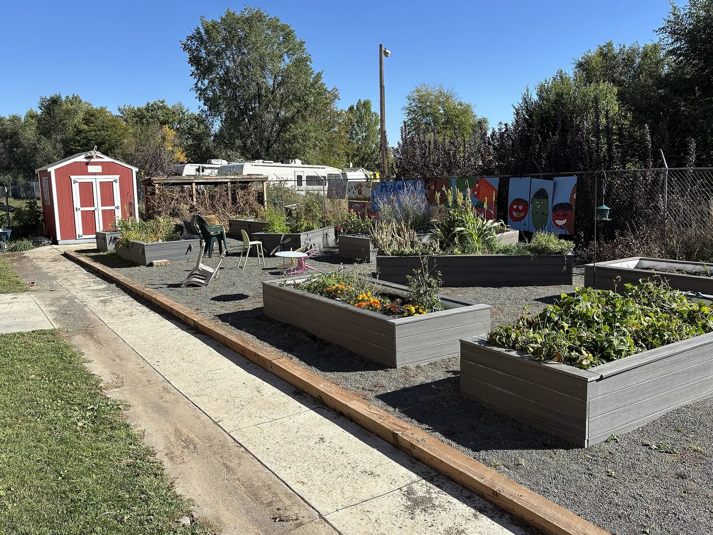

How Milpa compares to other garden planners
Several garden planners do things better than Milpa does, and they are named below - but only Milpa shows you where every number came from, and only Milpa keeps your rotation history when you rearrange the garden.
Last checked against each product’s own pages on August 21, 2026.
This table was last verified more than four months ago. Competitors’ features and prices change, so read the claims below as a snapshot from August 21, 2026, not as today’s state — the durable ones (a larger database, a longer history) age more slowly than any price.
Almost every comparison page in this category is written by the product it happens to crown. This one concedes first, because conceding is how the rest of this site already talks: every claim here is checked against the other product's own pages, and dated.
What other planners do better
These are real. Each is a thing a competitor does better than Milpa does today, checked against their own pages on August 21, 2026. Milpa carries about 83 crops, fewer than the incumbents; the answer to why it is still worth your time is the section after this one, not a denial of this one.
- GrowVeg and The Old Farmer's Almanac
- The most mature product in the category: a much larger plant database, a polished mobile app, and a real editorial team behind the advice. It is also the one incumbent already marketing on evidence and real-human sourcing.
- Seedtime
- Calendar-first onboarding that gets a beginner from nothing to a planting schedule faster than Milpa does.
- Planter
- Simpler and gentler for a first single raised bed - less to learn before the first seed goes in.
- Leaftide
- Whole-garden planning that already spans perennials and an orchard, with a larger plant list than ours.
- Rhubarb
- The best-funded of the recent newcomers, pairing the planner with an active community inside one app.
What only Milpa does
Every number shows its work
Each rule carries a plain-language confidence and the sources behind it, and the numbers Milpa is unsure of are published on their own page rather than hidden. A closed database asks you to trust it; this one asks you to check it. As the market fills with confident, unsourced, AI-written plant data, an auditable corpus is a claim none of the others can make and none can fake.
Rotation belongs to the ground, not the bed
Milpa attaches growing history to the ground itself, so when you rearrange the yard the rotation record survives. Every other planner roots history at the bed and loses it the first time you redesign - which is exactly what makes those tools single-season toys.
How this comparison stays honest
This page is checked against each product's own pricing and feature pages, and the date above is when it was last done. Prices and features move, so if that date looks old, treat the comparison with suspicion - and tell us. Every change to it is a dated commit in a public history you can read, which is the same standard Milpa holds its own numbers to.